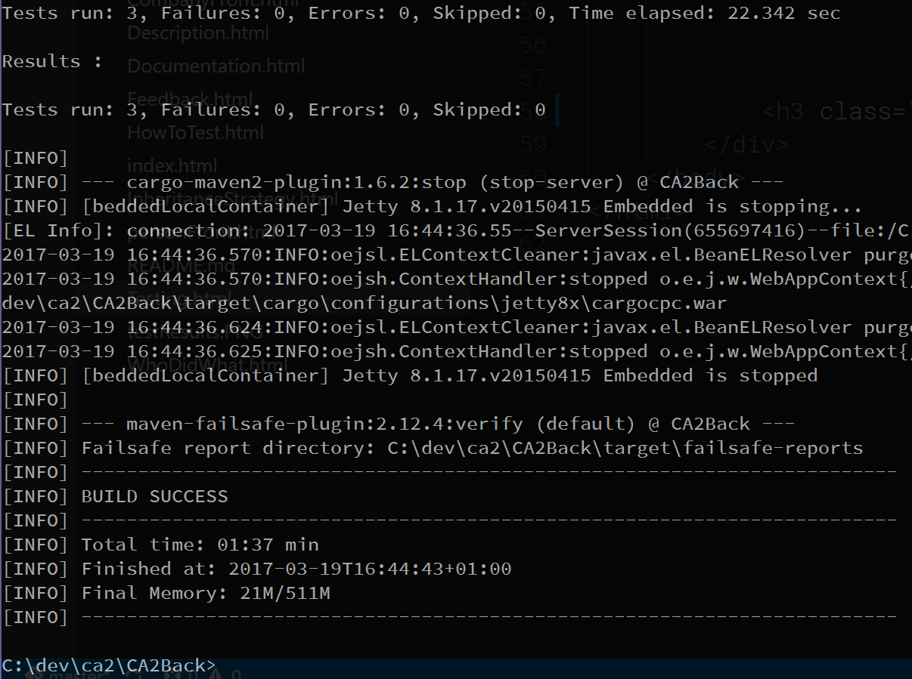

Testing
JUnit facade test
All methods in the three implemented facades have been tested using JUnit. In order to utilize a separate database for
tests, an extra persistence unit was added to persistence.xml, this PU referred to an in-memory database used for testing.
This means that any test data added, changed or removed during testing will not be added to the production database.
We have chosen not to use mocking, because we test against the in-memory database instead.
In the setUp() of each test an EntityManagerFactory is made from the testPU and an intance of the facade under
test is instatiated and both are saved in global variables, in order to access them in all subsequent test methods.
Then a method from Util is used to fill data in the database.
Each test uses the addEntityManagerFactory(emf) method
to add the emf to the facade instance, so that it utilizes the test database.
An example of a JUnit test:
public void testGetPerson_long() {
System.out.println("getPerson");
instance.addEntityManagerFactory(emf);
long id = 1L;
Person result = null;
try {
result = instance.getPerson(id);
} catch (TheException ex) {
fail(ex.getMessage());
}
assertNotNull(result);
assertTrue(id == result.getId());
}The following is a screenshot of all the tests from PersonFacadeTest succeeding:

Resource Integration Test
It is set up so you just have to run a single command, In order to run resource integration tests, you just need to run mvn verify -Pintegration which will
then first run the normal JUnit tests, and then run the integration tests
The following is a screenshot of all the tests from PersonFacadeTest succeeding:
